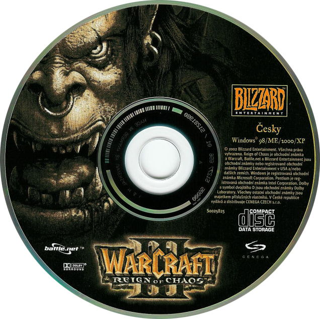

Моя любимая игра
Warcraft III
Почему же Warcraft III ? Однажды когда я еще был пиздюком, папа купил мне диск с игрой с названием "Warcraft III Reign of Chaos" и картинкой орка на всю коробку. Она меня увлекла, довольно интересная игра с полумультяшными юнитами, с классным сюжетом, с редактором карт да еще плюсом можно играть по сети. Нуу это вобще бомба!

Что было дальше?
А дальше была Dota, не Dota 2 а именно первая часть о которой либо не знают, либо забыли. Это была самая популярная любительская карта по сети.Далее появлялась "WOW". Это было просто улет.Еще позже вышло легандарное дополнение к WOW->Wrath of the Lich King. Самое популярное дополнение игры, оно остается таким и до сих пор. Ну а дальше все пошло на спад и вот Blizzard Entertainment решили вспомнить прошлое и выкатили это:

Ремастер игры не оправдал ожидания многих играком и мои тоже. Лучше старого Warcraft III мне кажется уже не будет.